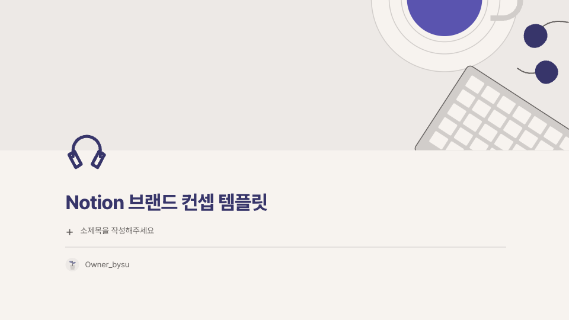
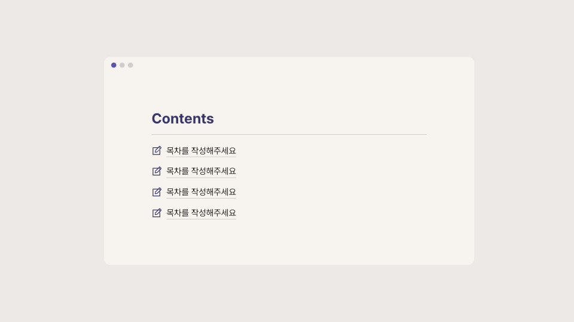
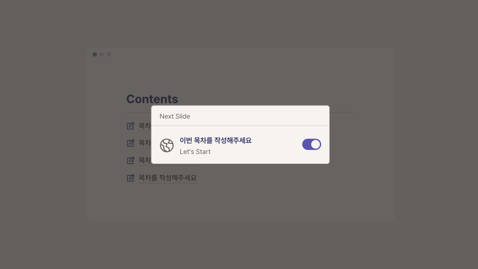
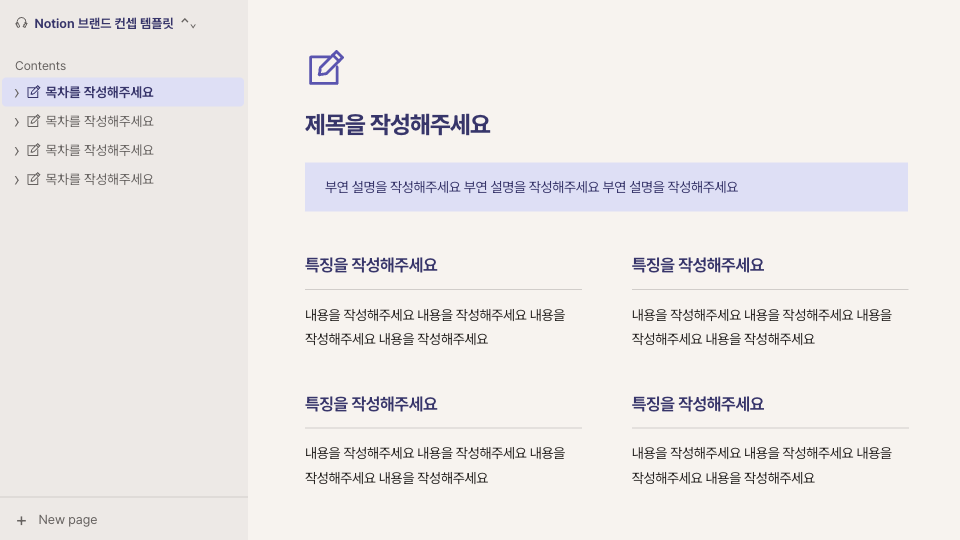
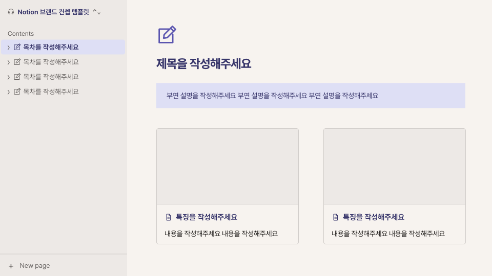
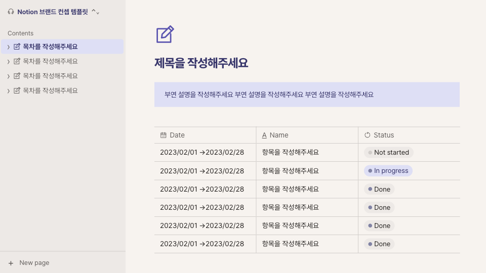
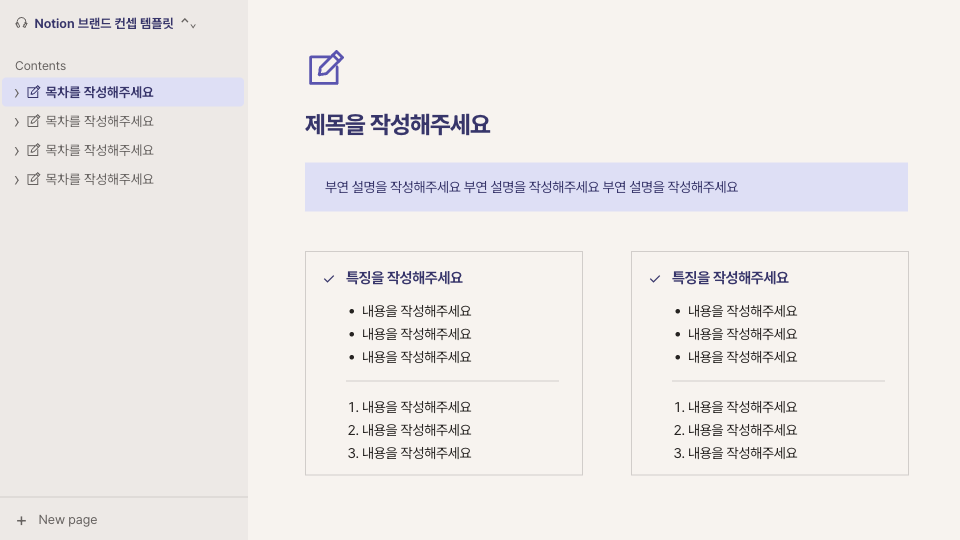
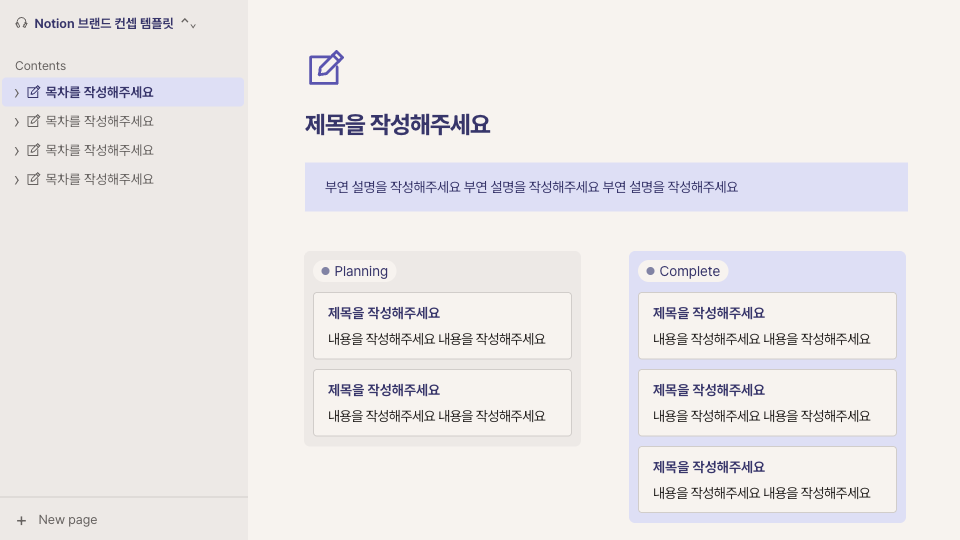

Notion 브랜드 컨셉 템플릿
상단 책상 비주얼과 헤드폰, 좌측 제목·소제목·소유자 · 상단 책상 비주얼과 헤드폰, 좌측 제목·소제목·소유자

Contents
중앙 브라우저 창 안의 제목과 4개 세로 목차 · 중앙 브라우저 창 안의 제목과 4개 세로 목차
· 화면 출처 ↗
Next Slide
어두워진 목차 창 위의 중앙 전환 모달과 토글 · 어두워진 목차 창 위의 중앙 전환 모달과 토글
· 화면 출처 ↗
특징 4개
좌측 노션 탐색 사이드바와 우측 2×2 특징 그리드 · 좌측 노션 탐색 사이드바와 우측 2×2 특징 그리드
· 화면 출처 ↗
갤러리 카드 2개
좌측 탐색 사이드바와 우측 빈 이미지·설명을 가진 갤러리 카드 2개 · 좌측 탐색 사이드바와 우측 빈 이미지·설명을 가진 갤러리 카드 2개
· 화면 출처 ↗
Date · Name · Status
좌측 탐색 사이드바와 우측 3열·6행 상태 데이터 표 · 좌측 탐색 사이드바와 우측 3열·6행 상태 데이터 표
· 화면 출처 ↗
체크리스트 2개
좌측 사이드바와 우측 2열 체크리스트: 각 3개 글머리 항목과 3개 순서 항목 · 좌측 사이드바와 우측 2열 체크리스트: 각 3개 글머리 항목과 3개 순서 항목
· 화면 출처 ↗
Planning · Complete
좌측 사이드바와 Planning 2개·Complete 3개의 칸반 카드 · 좌측 사이드바와 Planning 2개·Complete 3개의 칸반 카드
· 화면 출처 ↗